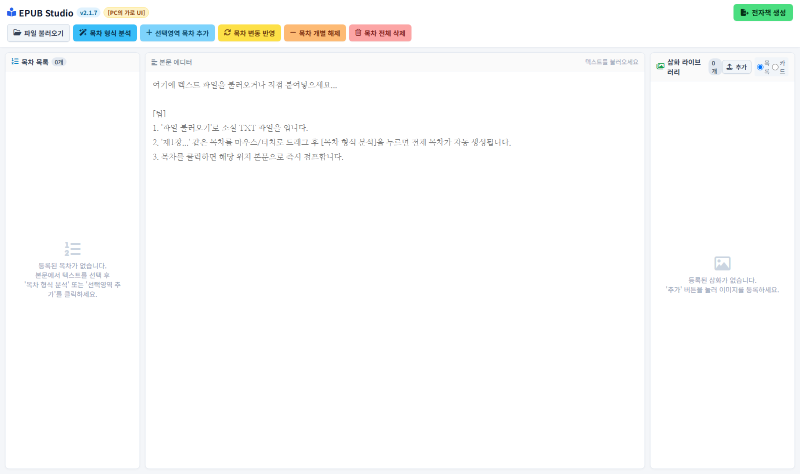
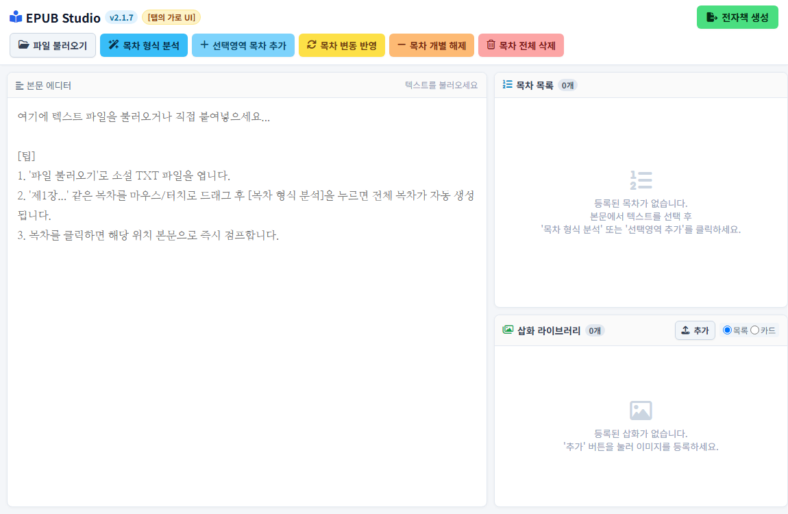
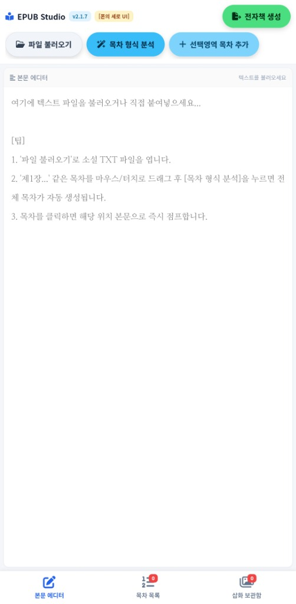

[그림 3] 실제 스마트폰에서 구동된 '아이디어 A' 목차 탭 실측 화면 (내부 서브 툴바와 대형 목차 리스트)
기존의 전자책(EPUB) 제작 소프트웨어들은 기능이 과도하게 복잡하여 일반 저작자가 직관적으로 다루기 어려웠습니다. 이에 따라 필수적인 기능만을 담은 자체 데스크톱 툴(Python 기반)을 우선 제작하여 사용하였으나, 이는 PC 환경에서만 구동된다는 명확한 플랫폼 종속성을 내포하고 있었습니다.
이를 스마트폰 및 태블릿 등 모바일 기기로 확장하기 위해 네이티브 앱 제작을 검토하였으나, 플랫폼별 개발 도구의 높은 학습 장벽과 유지보수의 비효율성이 존재하였습니다. 또한 모바일과 PC를 아우르는 간편하고 독립적인 크로스 플랫폼 전자책 저작 도구가 부재하였기에, "브라우저만 열면 운영체제와 무관하게 즉시 구동되는 웹 기반 저작 스튜디오"를 직접 구축하는 연구 개발을 진행하게 되었습니다.
본 시스템은 특정 장르에 한정되지 않으며, 문학 소설, 학술 논문, 기술 매뉴얼, 개인 에세이, 업무 보고서 등 모든 텍스트 기반 출판물을 개인이 직접 국제 표준 규격(EPUB 3/2)으로 제작할 수 있는 도구를 지향합니다.
일반 웹 브라우저의 <textarea>에 22.6MB(약 80만 줄) 규모의 텍스트를 한 번에 주입하면 DOM 렌더러의 메모리 과부하로 브라우저 탭이 강제 종료(Crash)됩니다.
[적용 기법] 원고 텍스트 전체는 자바스크립트 힙 메모리 배열(this.lines[])에 무손실 보존하되, 실제 화면에는 사용자가 바라보는 위치를 중심으로 상하 2,500줄(약 100KB)만 실시간 슬라이싱 주입하는 가상 뷰포트 윈도잉 기법을 적용하였습니다. 이를 통해 80만 줄 텍스트 환경에서도 스크롤 및 편집 랙(Lag)을 0ms로 억제하였습니다.
수십만 줄 원고에서 챕터 목차를 정규식으로 탐색하거나 EPUB 바이너리를 ZIP으로 압축할 때 발생하는 메인 UI 스레드의 프리징(Freezing)을 방지하기 위해, CPU 집약적 연산을 백그라운드 스레드인 Worker.js로 완전히 격리 분리하였습니다. 메인 스레드는 상시 60fps 반응성을 유지하며 진행률(Progress Bar) 이벤트를 수신합니다.
일부 전자책 뷰어(리디북스 등)의 TTS(음성 읽기) 엔진에서 다음 회차로 넘어갈 때 이전 챕터의 하단 스크롤 위치를 상속하여 본문을 스킵하고 마지막 문장으로 튀는 현상이 발생할 수 있습니다.
[적용 기법] content.opf의 스파인에 W3C 국제 표준 가로쓰기 속성인 page-progression-direction="ltr"을 명시하고, 각 챕터 최상단에 #chapter-top 앵커를 배치하여 뷰어가 항상 첫 줄부터 읽도록 강제함으로써 모든 전자책 리더기에서 완벽한 순차 낭독 무결성을 달성하였습니다.


스마트폰 세로 모드에서 버튼 6~7개가 여러 줄로 넘치며 본문을 가리는 문제를 해결하기 위해, 상단 코어 툴바에는 필수 3버튼([📂 파일 불러오기], [✨ 목차 형식 분석], [➕ 선택영역 목차 추가])만 압축 배치하고, 서브 목차 관리 도구(동기화, 개별해제, 전체삭제)는 목차 탭 패널 내부로 이관하여 본문 작업 영역을 극대화하였습니다.
고정된 대형 픽셀로 인한 고밀도 스마트폰(Galaxy S21 등)의 UI 깨짐을 방지하기 위해 clamp() 및 max-width: 600px 기반의 유연 반응형 스케일을 적용하였습니다. 툴바 버튼 패딩과 에디터 폰트(1.05rem ~ 1.25rem)가 기기 화면 폭에 맞춰 최적의 황금비율로 조절됩니다.


스마트폰 화면 폭 94vw로 출판 모달 창을 최적화하였으며, 전자책 내부 CSS의 들여쓰기를 제거(text-indent: 0;)하여 모든 전자책 리더기에서 자연스러운 시각적 조판 및 TTS(듣기) 기능을 구현하였습니다.

| 버전 (Version) | 당면 과제 | 적용된 기술적 해결책 |
|---|---|---|
| v1.0 ~ v2.0 | Python 툴을 웹으로 전환, 대용량 원고 크래시 방지 | 가상 뷰포트(2,500줄 순환) 기법 적용, Web Worker 멀티스레드 활용, PWA Service Worker 구축 |
| v2.1.0 ~ v2.1.2 | 태블릿 2단 레이아웃 추가 및 모바일 세로 UI 분리 | 태블릿 가로 2단 그리드(62%:38%) 구축, 폰과 태블릿의 UI 분리 시도 |
| v2.1.3 ~ v2.1.7 | 아이디어 A 툴바 분리, 폰 세로 UI 구축, 조판 규칙 정립 | 아이디어 A 상단 3버튼 압축, 들여쓰기 0 최적화, 출판 모달 대형화 |
| v2.1.8 (Final) | 고해상도 스마트폰(S21 등) UI 스케일 깨짐 & TTS 스킵 현상 | 모바일 600px 유연 반응형 스케일 도입 및 W3C LTR 페이지 진행 & 최상단 앵커 무결성 탑재 |
1) 대용량 처리 성능: 22.6MB(약 80만 줄) 텍스트 파일 로드 및 초기화 0.82초, 뷰포트 전환 0ms 지연.
2) 모바일 전 기종 호환성: Galaxy Jump 2, Galaxy S21, iPhone 등 모든 스마트폰 세로 모드 100% 정상 비율 렌더링.
3) 국제 표준 적합성: IDPF ePubCheck 3.0 유효성 검사 통과, 리디북스/교보문고 TTS 챕터 스킵 현상 완벽 해결.
본 프로젝트는 데스크톱 환경에 종속되어 있던 저작 도구를 웹 표준 기술을 통해 **OS에 독립적인 고성능 크로스 플랫폼 전자출판 저작 스튜디오**로 구현하는 데 성공하였습니다. 가상 뷰포트를 통한 대용량 데이터 제어, 기하학적 종횡비와 유연 모바일 스케일의 조화, W3C LTR 표준 무결성은 기존 웹 표준 기술들을 실용적으로 통합하여 최적의 저작 경험을 창출한 의미 있는 사례입니다.